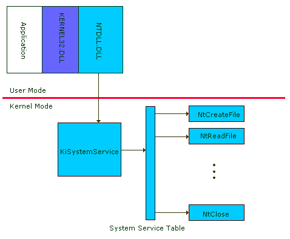

Virtually everybody familiar with NT has at the minimum heard that there is a hidden API that NT uses internally. This API, which is called the Native API, is almost entirely hidden from view, with only a handful of its function documented in generally accessible publications. This obfuscation has lead to a general belief that the Native API can provide applications magical powers, perhaps even allowing them to bypass security measures implemented by standard APIs like Win32. Thoughts along these lines usually lead to the Native API conspiracy theory: Microsoft is keeping the API for themselves and their own application to unfair advantage. The native API does expose some nuances not available through documented APIs (for example, you can specify whether or not file opens should be case sensitive, something not possible with Win32's CreateFile() or OpenFile()), however the majority of the APIs capabilities are accessible through documented channels.
This article will introduce you to the Native API and provide you a roadmap for what is in the API. I'll first describe what the Native API is, how it's invoked in normal operation, and how its used as a support infrastructure for the APIs of NT's operating environment subsystems. Then I'll take you on a tour of the API where I break it down into sets of related functions (memory management, synchronization, etc.). I'll talk about the capabilities available through the API's functions and note Win32 APIs that map to particular Native APIs where applicable. This comprehensive look at the Native API should help clarify misconceptions about how it's used, why it's used, and what the undocumented APIs are hiding from us (e.g. whether the conspiracy theory has validity).
The Windows NT Native API serves one purpose: as a means for calling operating system services located in kernel mode in a controlled manner. Kernel mode is where the core of NT executes, and it's in kernel mode that components have direct access to hardware and services that perform management of the computer's resources including memory, devices and processes. Thus, whenever a program executing in user mode wants to perform I/O, allocate or deallocate virtual memory, start a thread or process, or interact with global resources, it must call upon one or more services that live in kernel mode.
The Native API is equivalent to the system call interface on traditional monolithic operating systems such as most UNIXes. On most UNIXes, however, the system call interface is well documented and is generally available for use by standard applications. For example, the read() call for reading data from a file, socket, or input device in most flavors of UNIX is a system call that is handled by code in kernel mode. In Windows NT the Native API, its system call interface, is hidden from programmers behind higher level APIs such as Win32, OS/2, POSIX or DOS/Win16. The reason behind this is NT's architecture.
NT is a "modified microkernel" architecture. Instead of supporting one basic operating system API, NT implements several. It does this efficiently by implementing operating environment subsystems in user mode that export particular APIs to client programs. The "national language" API of NT is Win32, and the Win32 architecture demonstrates this concept. The Win32 operating environment subsystem is divided among a server process, CSRSS.EXE (Client/Server Runtime SubSystem), and client-side DLLs that are linked with programs that use the Win32 API. The core of the Win32 API is divided into three categories: windowing and messaging, drawing, and base services. Windows and messaging APIs include CreateWindow() and SendMessage(), and are exported to Win32 programs via the USER32.DLL library. BitBlt() and LineTo() are Win32 drawing functions and are provided in GDI32.DLL. Finally, base services include all Win32 I/O, process and thread, memory management, and synchronization APIs, and KERNEL32.DLL is the library that exports them.
When a Win32 program calls a Win32 API control is transferred within its address space into one of Win32's client-side DLLs. The DLL can execute one or more of the following options:
The first option of returning to the caller is rarely possible and is only possible when the DLL can service the function without the help of operating system services. An example of this is GetCurrentProcess(). This API simply returns a handle to the current process that is cached in KERNEL32 when the process is started.
The second option is also rarely required. A client-side DLL only needs to send messages to the Win32 server when the server must participate with, and be aware of, the function's execution. The Win32 server creates a Win32 execution environment for its clients that involves maintaining some state associated with its client processes. Thus, the CreateProcess() API, exported by KERNEL32, requires an interaction with the Win32 server. The server in this case prepares a new process for execution by mapping in an executable image, creating a command-line argument structure, and so on. The Win32 server calls Native API functions to create the actual process image and prepare its address map.
The final option is the most frequently exercised. Let's talk about USER32 and GDI32 APIs first, before talking about KERNEL32's use of Native APIs. In versions of NT prior to 4.0, windowing and drawing functions were located in the Win32 server (CSRSS.EXE). This meant that whenever an application used these function a message would be sent to the server. In NT 4.0 the windowing and drawing components of Win32 were moved into a kernel mode component named WIN32K.SYS. Instead of sending a message to the server, the client-side DLLs just call directly into the kernel, saving the overhead of messaging and context switching to another process. This has enhanced NT's graphics performance (as evidenced by the Pinball sample game). GDI and USER functions have become NT's second Native API, but they are less mysterious than the primary Native API since drawing, windowing, and messaging APIs are well-documented.
KERNEL32 functions that call the Native API directly include all of its I/O (e.g CreateFile(), ReadFile(), WriteFile()), synchronization (e.g. WaitForSingleObject(), SetEvent()), and memory management (e.g. VirtualAlloc(), VirtualProtect()) functions. In fact, the majority of KERNEL32's exported routines use the Native API directly. The figure below shows the flow of control from a Win32 application executing a Win32 call (CreateFile()), through KERNEL32, NTDLL, and into kernel mode where control is transferred to the NtCreateFile system service. I'll talk about this process in detail.
The Native API is provided to user-mode programs by the NTDLL.DLL library. NTDLL.DLL, besides containing Native API user-mode entry points, has process startup and module loading code in it. The bulk of it, though, are the Native API stubs that transfer control to kernel mode. This is accomplished by executing a software exception. If you look at a stub for a Native API in NTDLL inside of a debugger you'll see something like this (on x86):
NtCreateFile:
mov eax, 0x0000001A
lea edx, [esp+04]
int 0x2E
ret 0x2C
In this case the call is NtCreateFile but every other native call looks almost identical. The first instruction is loading a register with the Native API's index number. Every Native API has a unique index number, which is generated automatically by a script that runs as part of the NT build process. Thus, the index number for a specific function can vary from build to build as Native APIs are added and removed. The second instruction loads a register with a pointer to the call's parameters. Next is the software exception instruction. NT registers a kernel-mode exception handler specifically for handling Native API software exceptions. On x86's this exception is 0x2E. The final instruction pops the parameters off the caller's stack. Note that on Windows 2000 and higher Windows uses special processor instructions when available instead of INT 0x2E. On Intel systems it uses SYSENTER and on AMD systems it uses SYSCALL.
Note that all of the Native APIs begin with "Nt". The export table in NTDLL.DLL also makes the Native API accessible through an alternate naming convention, one where command names begin with "Zw" instead of "Nt". Thus, ZwCreateFile() is an alias for NtCreateFile().
The Native API exception handler in kernel mode is named KiSystemService, and it is invoked whenever a Native API is executed in user mode. Its task is to determine if the API's index number is valid, and if so, pass control to the appropriate system service in kernel mode to service the request. It does this by simply using the index number passed from user mode to index into an array called KiSystemServiceTable. Each entry in this array includes a pointer to the appropriate function and the number of parameters the function expects. KiSystemService takes the parameters passed on the user mode stack (pointed to in the edx register on x86) and pushes them on the kernel stack before calling the function specified in the array for the index.
Win32 Native APIs introduced in NT 4.0 are handled by the same exception handler, but the index numbers of Win32 functions specify that a second array of system service pointers should be used. The function pointers in the second array reference functions in WIN32K.SYS.
Each system service performs operations specific to the API they implement, of course, but most of them must deal with the validation of the parameters passed to them from user mode. Many parameters are pointers, and dereferencing an invalid pointer in kernel mode without taking precautionary measures can prove catastrophic. Validating parameters is straight-forward, but the number of Native APIs and the number of parameters they take have made getting it right tough for Microsoft. In 1997 I wrote a program called NTCrash that barraged the Native API interface with garbage parameters. The program discovered 13 WIN32K system services that failed to perform comprehensive parameter validation, the result of which were Blue Screens. Microsoft closed these holes in Service Pack 1.
About year later I revisited NTCrash and tweaked it to be more intelligent about generating garbage - the garbage this new version, NTCrash2, produces hits boundary conditions that can be easy to miss in validation. In fact, this revision found 40 more APIs (15 Native APIs and 25 WIN32K Native APIs) with Blue Screen holes. Microsoft has been made aware of the holes and they will be closed in Service Pack 4. Testers within Microsoft have told me that they use a greatly enhanced version of my NTCrash to test system call interfaces.
After parameter validation, system services usually call functions supplied by NT's Executive subsystems. These subsystems all live in kernel mode, and each is responsible for managing certain resources. Example subsystems include the Process Manager, Virtual Memory Manager, I/O Manager, and Local Procedure Call facility.
There are about 240 Native APIs in Win2K, up from around 200 in NT 3.5.1. In this section I break the Native API down into categories of related functions and I start each category by briefly describing the capabilities of the group. For each function I list Win32 functions that obtain functionality similar to that provided by the Native API (which they usually do by actually calling upon the Native API).
Currently, the only documentation on Native APIs is located in the Windows NT Device Driver Kit (DDK) and the Windows NT Installable File System Kit (IFS Kit). The DDK actually describes the parameters and usage of a around 25 Native APIs, and includes prototype and parameter information for a few others in NTDDK.H (e.g. NtQueryInformationProcess(). The IFS Kit documents about 25 more APIS only by providing prototypes in header files that come as part of the kit, and sometimes through their use in sample code. Most of APIs included in the IFS Kit are in the file I/O and security categories. The IFS Kit is available from Microsoft for a fee after signing an NDA (see Microsoft's Web site for information). You can find prototypes and some minimal documentation for many Native APIs in the third-party book Windows NT/2000 Native API Reference.
The format of the following tables is as follows: Column 1 shows the native API, column 2 shows Win32 functions that map to the API, column 3 provides a brief description of the APIs functionality, and column 4 shows if its documented in the DDK or not (either explicitly or by its prototype). Functions new to Win2K are shown in red, those new to XP in blue, and those new to Server 2003 in green.
| Special Files | |||
| These APIs are used to create files that have custom characteristics. | |||
| NtCreateMailslotFile | CreateMailSlot | Creates a mailslot end-point. | |
| NtCreateNamedPipeFile | CreateNamedPipe | Creates a named-pipe end-point. | |
| NtCreatePagingFile | The System applet uses this API to create paging files. Parameters specify the name, as well as minimum and maximum size. | ||
| Drivers | |||
| These functions are used by NT to load and unload device driver images from system memory. | |||
| NtLoadDriver | CreateFile with Service Control Manager | Loads a device driver based on information provided under HKLM\System\CurrentControlSet\Services\driver name | |
| NtUnloadDriver | Service Control Manager supported | Unloads the specified driver from memory, presuming the driver supports an unload interface. | |
| NtRegisterNewDevice | NT 3.51 only. | ||
| Processor and Bus | |||
| Processor registers and components can be controlled via these functions. | |||
| NtFlushInstructionCache | The NT kernel debugger uses this API, which flushes the processor instruction cache using the HAL. | ||
| NtFlushWriteBuffer | The processor's memory write buffer is flushed by this function, which uses the HAL. | ||
| NtSetLdtEntries | X86 Local Descriptor Table entries are initialized using this function. | ||
| NtEnumerateBus | NT 3.51 only. | ||
| NtGetCurrentProcessorNumber | New to Server 2K3. Gets the number of the processor on which a thread is executing. | ||
| Debugging and Profiling | |||
| The profiling APIs provide a mechanism for sample-based profiling of kernel-mode execution. The Kernprof tool in the DDK makes use of them, and a recent Windows Developer's Journal presented a source code to a Kernprof clone. The debug control function is used by WinDbg for obtaining internal kernel information and controlling thread and process execution. | |||
| NtCreateProfile | Creates a profile object. | ||
| NtQueryIntervalProfile | Returns profiled data. | ||
| NtSetIntervalProfile | Specified sampling interval. | ||
| NtStartProfile | Starts sampling. | ||
| NtStopProfile | Stops sampling. | ||
| NtSystemDebugControl | Implements a range of debugger support commands. | ||
| NtRegisterThreadTerminatePort | A debugger registers for thread termination notification with this API. | ||
| NtCreateDebugObject | New to WinXP. Creates a debug object. | ||
| NtDebugActiveProcess | DebugActiveProcess | New to WinXP. Enables a debugger to attach to an active process and debug it. | |
| NtDebugContinue | Continue DebugEvent | New to WinXP. Allows a process to contiue a thread that has generated a debug event. | |
| NtQueryDebugFilterState | New to WinXP. Queries the debug filter state level for a specific component. | ||
| NtRemoveProcessDebug | DebugActiveProcessStop | New to WinXP. Stops debugging the specified process. | |
| NtSetDebugFilterState | New to WinXP. Sets the debug output filter level for the specified component. | ||
| NtSetInformationDebugObject | New to WinXP. Sets the attributes of a debug object. | ||
| NtWaitForDebugEvent | WaitForDebugEvent | New to WinXP. Waits for a debugging event on a process being debugged. | |
| Channels | |||
| These functions were introduced in NT 4.0 and are present in Win2K Beta 1. However, they are all stubs that return STATUS_NOT_IMPLEMENTED. Their names imply that they were intended to provide access to a communications mechanism. Why are they in the released versions of NT if they are not implemented? | |||
| NtCreateChannel | Not implemented. | ||
| NtOpenChannel | Not implemented. | ||
| NtListenChannel | Not implemented. | ||
| NtSetContextChannel | Not implemented. | ||
| NtReplyWaitSendChannel | Not implemented. | ||
| NtSendWaitReplyChannel | Not implemented. | ||
| Power | |||
| There's only one Native API for power management in NT 4.0. Interestingly, this API was introduced in NT 4.0, but was a stub that returned STATUS_NOT_IMPLEMENTED. Win2K fleshes out the API and adds more commands. | |||
| NtSetSystemPowerState | Not implemented in NT 4.0. | ||
| NtInitiatePowerAction | New to Win2K. Initiate a power event (e.g. suspend) | ||
| NtPowerInformation | GetSystemPowerStatus | New to Win2K. Get the system's power state. | |
| NtSetThreadExecutionState | SetThreadExecutionState | New to Win2K. Sets a thread's system power state requirement. | |
| NtRequestWakeupLatency | New to Win2K. Sets a process' wakeup latency. | ||
| Plug-and-Play | |||
| Like the Power API, some of these were introduced in NT 4.0 as unimplemented functions. Win2K fleshes them out and adds more. | |||
| NtGetPlugPlayEvent | Present, but not implemented in NT 4.0. Sets plug and play events. | ||
| NtPlugPlayControl | Present, but not implemented in NT 4.0. Sends commands to the plug-and-play subsystem. | ||
| Objects | |||
| Object manager namespace objects are created and manipualted with these routines. A couple of these, like NtClose, are general in that they are used with any object type. | |||
| NtClose | CloseHandle | Closes a handle to any object type. | DDK |
| NtDuplicateObject | DuplicateHandle | Duplicates a handle to an object. | |
| NtCreateDirectoryObject | Creates a directory in the object manager namespace. | DDK | |
| NtCreateSymbolicLinkObject | Creates a symbolic link in the object manager namespace. The Win32 DefineDosDevice command lets you create links, but only in the \?? subdirectory. | DDK | |
| NtMakeTemporaryObject | Causes a permanent object to be deleted during NT shutdown so that it isn't present at the next boot. | DDK | |
| NtOpenDirectoryObject | Opens an object manager namespace directory. | ||
| NtQueryDirectoryObject | Used to enumerate the objects located in an directory object. | ||
| NtOpenSymbolicLinkObject | Opens a symbolic link object. | ||
| NtQuerySymbolicLinkObject | Returns the name of the object that the symbolic link points at. | ||
| NtQueryObject | Queries an an object's attributes, such as its name. | ||
| NtSetInformationObject | Sets an object's attributes. | ||
| NtMakePermanentObject | New to WinXP. Sets the permanent flag on an object. | ||
| NtTranslateFilePath | New to WinXP. Translates a file path from one format (e.g. NT, ARC, EFI) to another. | ||
| Registry | |||
| Win32 Registry functions basically map directly to these APIs, and many of them are documented in the DDK. | |||
| NtCreateKey | RegCreateKey | Creates or opens a Registry key. | DDK |
| NtOpenKey | RegOpenKey | Opens an existing Registry key. | DDK |
| NtDeleteKey | RegDeleteKey | Deletes a Registry key. | DDK |
| NtDeleteValueKey | RegDeleteValue | Deletes a value. | DDK |
| NtEnumerateKey | RegEnumKey, RegEnumKeyEx | Enumerates the subkeys of a key. | DDK |
| NtEnumerateValueKey | RegEnumValue | Enumerates the values within a key. | DDK |
| NtFlushKey | RegFlushKey | Flushes changes back to the Registry on disk. | DDK |
| NtInitializeRegistry | Gets the Registry rolling. The single parameter to this specifies whether its a setup boot or a normal boot. | ||
| NtNotifyChangeKey | RegNotifyChangeKeyValue | Allows a program to be notified of changes to a particular key or its subkeys. | |
| NtQueryKey | RegQueryKey | Queries information about a key. | DDK |
| NtQueryMultiplValueKey | RegQueryMultipleValues | Retrieves information about multiple specified values. This API was introduced in NT 4.0. | |
| NtQueryValueKey | RegQueryValue, RegQueryValueEx | Retrieves information about a specified value. | DDK |
| NtReplaceKey | RegReplaceKey | Changes the backing file for a key and its subkeys. Used for backup/restore. | |
| NtSaveKey | RegSaveKey | Saves the contents of a key and subkey to a file. | |
| NtRestoreKey | RegRestoreKey | Loads the contents of a key from a specified file. | |
| NtSetInformationKey | Sets attributes of a key. | ||
| NtSetValueKey | RegSetValue, RegSetValueEx | Sets the data associated with a value. | DDK |
| NtLoadKey | RegLoadKey | Loads a hive file into the Registry. | |
| NtLoadKey2 | Introduced in NT 4.0. Allows for options on loading a hive. | ||
| NtUnloadKey | RegUnloadKey | Unloads a hive from the Registry. | |
| NtCompactKeys | New to WinXP. Makes key storage adjacent. | ||
| NtCompressKey | New to WinXP. Performs in-place compaction of a hive. | ||
| NtLockRegistryKey | New to WinXP. Locks a registry key for modification. | ||
| NtRenameKey | New to WinXP. Renames a Registry key. | ||
| NtSaveKeyEx | RegSaveKeyEx | New to WinXP. Saves the contents of a key and its subkeys to a file. | |
| NtUnloadKeyEx | New to WinXP. Unloads a hive from the Registry. | ||
| NtLoadKeyEx | New to Server 2K3. Loads a hive into the Registry. | ||
| NtUnloadKey2 | New to Serer 2K3. Unloads a hive from the Registry. | ||
| NtQueryOpenSubKeysEx | New to Server 2003. Returns the keys opened beneath a specified key. | ||
| Local Procedure Call | |||
| LPC is NT's core interprocess communications mechanism. If you use RPC between processes on the same computer you are using LPC indirectly. | |||
| NtCreatePort | Creates a port object. | ||
| NtAcceptConnectPort | Accepts a port connection. | ||
| NtCompleteConnectPort | Completes a connection. | ||
| NtConnectPort | Connects a port to another port that is accepting connections. | ||
| NtImpersonateClientOfPort | Thread impersonates the identify of the process on the other end of a port. | ||
| NtListenPort | Listens on a port for connection requests. | ||
| NtQueryInformationPort | Obtains information on a port. | ||
| NtReadRequestData | Reads data associated with a port message. | ||
| NtReplyPort | Sends a reply message. | ||
| NtReplyWaitReceivePort | Sends a reply message and then waits for an incoming request message. | ||
| NtReplyWaitReplyPort | Sends a reply message and then waits for an incoming reply message. | ||
| NtRequestPort | Sends a request message. | ||
| NtRequestWaitReplyPort | Sends a request message and waits for an incoming reply message. | ||
| NtWriteRequestData | Fills in data for a request message | ||
| NtSecureConnectPort | New to Win2K. Creates a secure connection port. | ||
| NtQueryPortInformationProcess | New to WinXP. Used to determine if a process has an associated exception or debug port. | ||
| Security | |||
| The Native security APIs are mapped almost directly by Win32 security APIs. | |||
| NtAccessCheck | AccessCheck | Checks to see whether current thread has access to an object based on its security descriptor. | |
| NtAccessCheckAndAuditAlarm | AccessCheckAuditAlarm | Generates an audit message related to access checking. | |
| NtAdjustGroupsToken | AdjustTokenGroups | Adds or removes groups associated with a token. | |
| NtAdjustPrivilegesToken | AdjustTokenPrivileges | Enables or disables privileges associated with a token. | |
| NtCloseObjectAuditAlarm | ObjectCloseAuditAlarm | Generates an audit message indicating that an object was closed. | |
| NtCreateToken | CreateToken | Creates a token object. | |
| NtDeleteObjectAuditAlarm | ObjectDeleteAuditAlarm | Generated an audit event indicating that an object was deleted. | |
| NtDuplicateToken | DuplicateToken, DuplicateTokenEx | Duplicates a token object. | |
| NtImpersonateThread | ImpersonateLoggedOnUser | Allows a thread to impersonate the identity of another user. | |
| NtOpenObjectAuditAlarm | ObjectOpenAuditAlarm | Generated an audit event indicating that an object was opened. | |
| NtOpenProcessToken | OpenProcessToken | Obtains a handle to the token of a specified process. | |
| NtOpenThreadToken | OpenThreadToken | Opens a handle to the token of a specified thread. | |
| NtPrivilegeCheck | PrivilegeCheck | Checks to see whether a token has the specified privileges enabled. | |
| NtPrivilegeObjectAuditAlarm | ObjectPrivilegeAuditAlarm | Generates an audit event record associated with a privilege check. | |
| NtPrivilegedServiceAuditAlarm | PrivilegedServiceAuditAlarm | Generates an audit message indicating the attempt to use specified privileges. | |
| NtQueryInformationToken | GetTokenInformation | Obtains information about a token. | |
| NtQuerySecurityObject | GetUserObjectSecurity, GetPrivateObjectSecurity | Retrieves information about an object's security settings. | |
| NtSetInformationToken | SetTokenInformation | Sets a token's attributes. | |
| NtSetSecurityObject | SetUserObjectSecurity, SetrivateSecurityObject | Sets the security information of an object. | |
| NtAccessCheckByType | AccessCheckByType | New object-specific security support in Win2K. | |
| NtAccessCheckByTypeAndAuditAlarm | AccessCheckByTypeAndAuditAlarm | New object-specific security support in Win2K. | |
| NtAccessCheckByTypeResultList | AccessCheckByTypeResultList, AccessCheckByTypeResultListAndAuditAlarm | New object-specific security support in Win2K. | |
| NtFilterToken | CreateRestrictedToken | New object-specific security support in Win2K. | |
| NtCompareToken | New to WinXP. Compares two tokens. | ||
| NtOpenProcessTokenEx | New to WinXP. Opens a process token. | ||
| NtOpenThreadTokenEx | New to WinXP. Opens a thread token. | ||
| Processes and Threads | |||
| These functions control processes and threads. Many have direct Win32 equivalents. | |||
| NtAlertResumeThread | Resumes a thread. | ||
| NtAlertThread | Sends an alert to a thread. | ||
| NtTestAlert | Tests for whether a thread has a pending alert. | ||
| NtCreateProcess | CreateProcess | Creates a new process. | |
| NtCreateThread | CreateThread | Creates a new thread. | |
| NtCurrentTeb | Returns a pointer to a thread's environment block. | ||
| NtDelayExecution | Sleep, SleepEx | Pauses a thread for a specified time. | |
| NtGetContextThread | GetThreadContext | Retrieves the hardware context (registers) of a thread. | |
| NtSetContextThread | SetThreadContext | Sets the hardware context (registers) of a thread. | |
| NtOpenProcess | OpenProcess | Opens a handle to a specified process. | DDK |
| NtOpenThread | OpenThread | Opens a handle to a specified thread. | |
| NtQueryInformationProcess | GetProcessTimes, GetProcessVersion, GetProcessWorkingSetSize, GetProcessPriorityBoost, GetProcessAffinityMask, GetPriorityClass, GetProcessShutdownParameters | Obtains information about a process' attributes. | DDK |
| NtQueryInformationThread | GetThreadTimes, GetThreadPriority, GetThreadPriorityBoost | Obtains information about a thread's attributes. | DDK |
| NtQueueApcThread | QueueUserApc | Introduced in NT 4.0. Queues an Asynchornous Procedure Call to a thread. | |
| NtResumeThread | ResumeThread | Wakes up a suspended thread. | |
| NtSetInformationProcess | SetProcessAffinityMask, SetPriorityClass, SetProcessPriorityBoost, SetProcessShutdownParameters, SetProcessWorkingSetSize | Sets a process' attributes. | DDK |
| NtSetInformationThread | SetThreadAffinityMask, SetThreadIdealProcessor, SetThreadPriority, SetThreadPriorityBoost | Sets a thread's attributes. | DDK |
| NtSetLowWaitHighThread | NT 4.0 only (not in Win2K). | ||
| NtSetHighWaitLowThread | NT 4.0 only (not in Win2K). | ||
| NtSuspendThread | SuspendThread | Suspends a thread's execution. | |
| NtTerminateProcess | TerminateProcess | Deletes a process. | |
| NtTerminateThread | TerminateThread | Deletes a thread. | |
| NtYieldExecution | SwitchToThread | Introduced in NT 4.0. Causes thread to give up CPU. | |
| NtCreateProcessEx | New to WinXP. Creates a new process. | ||
| NtResumeProcess | New to WinXP. Resumes a suspended process. | ||
| NtSuspendProcess | New to WinXP. Suspends a process. | ||
| NtApphelpCacheControl | New to Server 2003. Controls the application-compatibility shim cache. | ||
| Atoms | |||
| Atoms allow for the efficient storage and referencing of character strings. | |||
| NtAddAtom | AddAtom | Introduced in NT 4.0. Adds a character string to an atom table. | |
| NtDeleteAtom | DeleteAtom | Introduced in NT 4.0. Removes an atom from an atom table. | |
| NtFindAtom | FindAtom | Introduced in NT 4.0. Looks up an atom in an atom table. | |
| NtQueryInformationAtom | GetAtomName | Introduced in NT 4.0. Retrieves information about an atom. | |
| Error Handling | |||
| Device drivers and debuggers rely on these error handling routines. | |||
| NtRaiseException | RaiseException | Signals an exception condition to trigger exception handler execution. | |
| NtContinue | try/except | Allows error processing handling to continue to the next handler. | |
| NtRaiseHardError | Used to raise an error message box. | ||
| NtSetDefaultHardErrorPort | SetErrorMode | Used by programs to disable hard error message boxes cause by their actions. | |
| Execution Environment | |||
| These functions are related to general execution environment. | |||
| NtQueryDefaultLocale | GetLocaleInfo | Retrieves information about the locale. | |
| NtSetDefaultLocale | SetLocaleInfo | Sets locale information. | |
| NtQuerySystemEnvironmentValue | GetEnvironmentVariable | Gets the value of an environment variable. | |
| NtSetSystemEnvironmentValue | SetEnvironmentVariable | Sets the value of an environment variable. | |
| NtQueryDefaultUILanguage | New to Win2K. Win2K supports on-the-fly language changes. Queries the current language. | ||
| NtSetDefaultUILanguage | New to Win2K. Win2K supports on-the-fly language changes. Sets the current language. | ||
| NtEnumerateSystemEnvironmentValuesEx | New to WinXP. Enumerates the system environment variables. | ||
| NtQuerySystemEnvironmentValueEx | New to WinXP. Queries the value of an environment variable. | ||
| Timers and System Time | |||
| Virtually all these routines have functionality accessible via Win32 APIs. | |||
| NtCancelTimer | CancelWaitableTimer, timeKillEvent | Cancels a timer. | |
| NtCreateTimer | CreateWaitableTimer | Creates a timer. | |
| NtOpenTimer | OpenWaitableTimer | Opens a timer object. | |
| NtQueryTimer | Queries a timer's attributes. | ||
| NtQueryTimerResolution | timeGetDevCaps | Queries the system's timer resolution. | |
| NtSetTimer | timeSetEvent | Sets a timer for an expiration event. | |
| NtSetTimerResolution | timeBeginPeriod, timeEndPeriod | Sets the system timer resolution. | |
| NtQueryPerformanceCounter | QueryPerformanceCounter, QueryPerformanceFrequency | Queries the system performance counter. | |
| NtQuerySystemTime | GetSystemTime | Gets the current time. | |
| NtSetSystemTime | SetSystemTime | Sets the system time. | |
| NtGetTickCount | GetTickCount | Get the ticks since system boot. | |
| Synchronization | |||
| Most synchronization objects have Win32 APIs, with the notable exception of event pairs. Event pairs are used for high-performance interprocess synchronization by the LPC facility. | |||
| NtCreateEvent | CreateEvent | Creates an event object. | |
| NtOpenEvent | OpenEvent | Opens an event object. | |
| NtClearEvent | Clears the signalled state of an event. | ||
| NtPulseEvent | PulseEvent | Signals an event and then resets it. | |
| NtQueryEvent | Queries the state of an event. | ||
| NtResetEvent | ResetEvent | Resets an event to a non-signalled state. | |
| NtSetEvent | SetEvent | Sets an event to the signalled state. | |
| NtCreateEventPair | Creates an event pair. | ||
| NtOpenEventPair | Opens an event pair. | ||
| NtSetHighEventPair | Sets the high half of an event pair to signalled state. | ||
| NtSetHighWaitLowEventPair | Sets the high half of an event pair to signalled state and waits for the low half to become signalled. | ||
| NtSetLowEventPair | Sets the low half of an event pair. | ||
| NtSetLowWaitHighEventPair | Sets the low half of an event pair and waits for the high-half to become signalled. | ||
| NtWaitHighEventPair | Waits for the high-half of an event pair to become signalled. | ||
| NtWaitLowEventPair | Waits for the low-half of an event pair to become signalled. | ||
| NtCreateMutant | CreateMutex | Creates a mutant object (known as a mutex in user mode). | |
| NtOpenMutant | OpenMutex | Opens a mutant object (known as a mutex in user mode). | |
| NtQueryMutant | Queries the state of a mutant object. | ||
| NtReleaseMutant | ReleaseMutex | Signals a mutant | |
| NtReleaseProcessMutant | 3.51 only. | ||
| NtReleaseThreadMutant | 3.51 only. | ||
| NtCreateSemaphore | CreateSemaphore | Creates a semaphore object. | |
| NtOpenSemaphore | OpenSemaphore | Opens a semaphore object. | |
| NtQuerySemaphore | Queries the state of a semaphore. | ||
| NtReleaseSemaphore | ReleaseSemaphore | Signals a semaphore. | |
| NtSignalAndWaitForSingleObject | Introduced in NT 4.0. Signals a synchornization object and then waits for it to be signalled again. | ||
| NtWaitForMultipleObjects | WaitForMultipleObjects, WaitForMultipleObjectsEx | Waits for multiple objects to become signalled. | |
| NtWaitForSingleObject | WaitForSingleObject, WaitForSingleObjectEx | Waits for a single object to become signalled. | |
| NtCreateKeyedEvent | New to WinXP. Creates a keyed event object. | ||
| NtOpenKeyedEvent | New to WinXP. Opens a named keyed event object. | ||
| NtReleaseKeyedEvent | New to WinXP. Signals a keyed event object. | ||
| NtWaitForKeyedEvent | New to WinXP. Waits for a keyed event to become signalled. | ||
| NtSetEventBoostPriority | New to WinXP. Signals an event and sets the priority of woken threads. | ||
| Memory | |||
| Most of NT's virtual memory APIs are accessible via Win32. | |||
| NtAllocateVirtualMemory | VirtualAlloc, VirtualAllocEx | Allocates virtual memory. | |
| NtFreeVirtualMemory | VirtualFree, VirtualFreeEx | Frees virtual memory. | |
| NtQueryVirtualMemory | VirtualQuery, VirtualQueryEx | Queries a range of virtual memory's attributes. | |
| NtProtectVirtualMemory | VirtualProtect, VirtualProtectEx | Sets the protection for a range of virtual memory. | |
| NtLockVirtualMemory | VirtualLock | Locks a range of virtual memory. | |
| NtUnlockVirtualMemory | VirtualUnlock | Unlocks a range of virtual memory. | |
| NtReadVirtualMemory | ReadProcessMemory | Reads a range of virtual memory from a specied process. | |
| NtWriteVirtualMemory | WriteProcessMemory | Writes a range of virtual memory from a specied process. | |
| NtFlushVirtualMemory | FlushViewOfFile | Flushes a memory mapped range of memory to the file on disk. | |
| NtCreateSection | CreateFileMapping | Creates a range of memory backed by a file. | |
| NtOpenSection | OpenFileMapping | Opens a named memory mapping section object. | DDK |
| NtExtendSection | Extends an existing range of virtual memory backed by a file. | ||
| NtMapViewOfSection | MapViewOfFile | Maps a portion of a file into virtual memory. | DDK |
| NtUnmapViewOfSection | UnmapViewOfFile | Unmaps a portion of virtual memory backed by a file. | DDK |
| NtAllocateVirtualMemory64 | VirtualAllocVlm | New to Win2K. Allocates 64-bit virtual memory. | |
| NtFreeVirtualMemory64 | VirtualFreeVlm | New to Win2K. Frees 64-bit virtual memory. | |
| NtMapViewOfVlmSection | MapViewOfFileVlm | New to Win2K. Maps a file into 64-bit virtual memory. | |
| NtUnmapViewOfVlmSection | UnmapViewOfFileVlm | New to Win2K. Unmaps a view of a file mapped into 64-bit virtual memory. | |
| NtAreMappedFilesTheSame | New to Win2K. The loader uses this to efficiently see if a given file has already been mapped into memory. | ||
| NtProtectVirtualMemory64 | VirtualProtectVlm | New to Win2K. Sets protection on 64-bit virtual memory. | |
| NtQueryVirtualMemory64 | VirtualQueryVlm | New to Win2K. Queries the attributes of 64-bit virtual memory. | |
| NtReadVirtualMemory64 | ReadProcessMemoryVlm | New to Win2K. Reads data from 64-bit memory of the specified process. | |
| NtWriteVirtualMemory64 | WriteProcessMemoryVlm | New to Win2K. Writes data to 64-bit memory of the specified process. | |
| File and General I/O | |||
| File I/O is the best documented of the native APIs since many device drivers must make use of it. | |||
| NtCancelIoFile | CancelIo | Cancels an I/O request. | |
| NtCreateFile | CreateFile, CreateDirectory, CreateDirectoryEx | Create or opens a file, directory or device object. | DDK |
| NtCreateIoCompletion | CreateIoCompletionPort | Tells the I/O manager that a thread wishes to be notified when an I/O completes. | |
| NtOpenIoCompletion | Opens a named I/O completion object. | ||
| NtSetIoCompletion | Sets an I/O completion object's attributes. | ||
| NtQueryIoCompletion | Retrieves specific information about an I/O completion object. | ||
| NtRemoveIoCompletion | Removes an I/O completion callback. | ||
| NtDeleteFile | DeleteFile | Deletes a file object. | |
| NtDeviceIoControlFile | DeviceIoControl | Sends an IOCTL to a device's device driver, which represented by an open file object. | |
| NtFlushBuffersFile | FlushFileBuffers | Flushes in-memory file data to disk. | |
| NtFsControlFile | DeviceIoControl | Sends an I/O control (IOCTL) to a driver represented by an open device object. These are typically used for file system-related special commands. | |
| NtLockFile | LockFile, LockFileEx | Locks a range of a file for synchronized access. | |
| NtUnlockFile | UnlockFile | Unlocks a range of a file for synchronized access. | |
| NtNotifyChangeDirectoryFile | FindFirstChangeNotification, FindNextChangeNotification | Registers that a thread wishes to be notified when a directory's contents change. | |
| NtOpenFile | OpenFile | Opens an existing file. | |
| NtQueryAttributesFile | GetFileAttributesEx | Gets a file's attributes. | |
| NtQueryDirectoryFile | FindFirstFile, FindFirstFileEx, FindNextFile | Retrieves a directory's contents. | |
| NtQueryEaFile | Retrieves a file's extended attributes. | ||
| NtSetEaFile | Sets the extended attributes of a file. | ||
| NtQueryFullAttributesFile | Introduced in NT 4.0. Gets a file's full attributes. | ||
| NtQueryInformationFile | GetShortPathName, GetLongPathName, GetFullPathName, GetFileType, GetFileSize, GetFileTime | Retrieves specific information regarding a file. | DDK |
| NtSetInformationFile | SetEndOfFile, SetFileAttributes, SetNamedPipeHandleState, SetMailslotInfo | Sets specific information regarding a file. | DDK |
| NtQueryVolumeInformationFile | GetDiskFreeSpace, GetDriveType | Retrieves specific information regarding a disk volume. | |
| NtSetVolumeInformationFile | SetVolumeLabel | Sets information about a volume. | |
| NtReadFile | ReadFile, ReadFileEx | Reads data from a file. | DDK |
| NtWriteFile | WriteFile, WriteFileEx | Writes data to a file. | DDK |
| NtReadFileScatter | ReadFileScatter | Introduced in NT 4.0 SP2 for SQL Server. Reads data from a file into virtually discontiguous buffers. | |
| NtWriteFileGather | WriteFileGather | Introduced in NT 4.0 SP2 for SQL Server. Writes data to a file from virtually discontiguous buffers. | |
| NtQueryQuotaInformationFile | IDiskQuotaControl:: | New to Win2K. Win2K supports NTFS disk quotas. Queries disk quota information. | |
| NtSetQuotaInformationFile | IDiskQuotaControl:: | New to Win2K. Win2K supports NTFS disk quotas. Sets disk quota information. | |
| NtReadFile64 | ReadFileVlm | New to Win2K. Reads data from a file into 64-bit virtual memory. | |
| NtWriteFile64 | WriteFileVlm | New to Win2K. Writes data to a file from 64-bit virtual memory. | |
| Miscellaneous | |||
| These functions don't fall neatly into other categories. | |||
| NtAllocateLocallyUniqueId | AllocateLocallyUniqueId | Allocates an ID that is unique to the system with respect to other IDs allocate by this function. The security subsystem makes extensive use of this. | |
| NtAllocateUuids | Allocates UUIDs. | ||
| NtDisplayString | Displays a string on the Blue Screen. This is used both during system boot and for writing on the Blue Screen of Death. | ||
| NtQuerySystemInformation | While this function isn't directly documented, the Performance Counters in the Registry export much of the information obtainable via this call. | ||
| NtSetSystemInformation | Various administrative applets use this function. For instance, quantum boosting is set with this API. | ||
| NtShutdownSystem | ExitWindows | Shuts down NT with options for rebooting. | |
| NtVdmControl | Sends commands to a Virtual DOS Machine. | ||
| NtCallbackReturn | For returning from Win32 into a caller. | ||
| NtW32Call | For calling into Win32 user mode. | ||
| NtQueryOleDirectoryFile | NT 4.0 only. | ||
| NtLockProductActivationKeys | New to WinXP. Locks the product activation keys for writing. | ||
| Jobs | |||
| These functions implement Job objects, which are new to Win2K. They are essentially a group of associated processes that can be controlled as a single unit and that share job-execution time restrictions. | |||
| NtCreateJobObject | CreateJobObject | New to Win2K. Creates a job object. | |
| NtOpenJobObject | OpenJobObject | New to Win2K. Opens a named Job Object. | |
| NtQueryInformationJobObject | QueryInformationJobObject | New to Win2K. Retrieves information about a Job Object. | |
| NtAssignProcessToJobObject | AssignProcessToJobObject | New to Win2K. Assigns a process to a Job Object. | |
| NtSetInformationJobObject | SetInformationJobObject | New to Win2K. Sets a Job Object's attributes (e.g. priority). | |
| NtTerminateJobObject | TerminateJobObject | New to Win2K. Terminates a Job Object, which terminates all of its associated processes. | |
| NtCreateJobSet | New to WinXP. Creates a job set from multiple job objects. | ||
| IA64 Boot.ini | |||
| These functions are for managing the IA64 version of Boot.ini, which is stored in non-volatile RAM. On non-IA64 systems these return STATUS_NOT_IMPLEMENTED. | |||
| NtAddBootEntry | New to WinXP. Adds an entry to the boot menu. | ||
| NtDeleteBootEntry | New to WinXP. Deletes an entry from the boot menu. | ||
| NtEnumerateBootEntries | New to WinXP. Enumerates the boot menu entries. | ||
| NtModifyBootEntry | New to WinXP. Modifies an existing boot menu entry. | ||
| NtQueryBootEntryOrder | New to WinXP. Queries the order of boot menu entries. | ||
| NtQueryBootOptions | New to WinXP. Queries the options associated with a boot menu entry. | ||
| NtSetBootEntryOrder | New to WinXP. Sets the order of boot menu entries. | ||
| NtSetBootOptions | New to WinXP. Sets the options associated with a boot menu entry. | ||
| EFI Drivers | |||
| These functions are for managing IA64 Extensible Firmware Interface device drivers. On non-IA64 systems these return STATUS_NOT_IMPLEMTNED. | |||
| NtAddDriverEntry | New to Server 2003. Adds a driver. | ||
| NtDeleteDriverEntry | New to Server 2003. Deletes a driver entry. | ||
| NtEnumerateDriverEntries | New to Server 2003. Enumerates driver entries. | ||
| NtModifyDriverEntry | New to Server 2003. Modifies an existing driver entry. | ||
| NtQueryDriverEntryOrder | New to Server 2003. Queries the order of driver entries. | ||
| NtSetDriverEntryOrder | New to Server 2003. Sets the order of driver entries. | ||